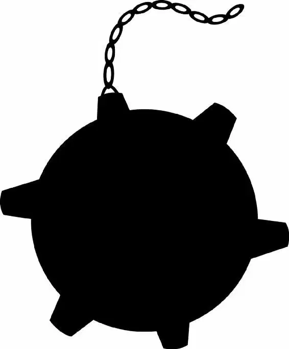

It was the same mask that had dropped into the water when Nemo was taken away.
Maybe it would give Marlin a clue! A way to find his son.
“Nemo,” Marlin said under his breath. “Nemo,” said Chum with a confused stare. “I don’t get it.”
“For a clownfish he’s not that funny,” Bruce agreed.
“No,no,no,” Marlin said as he floated up toward the mask. “He’s my son. He was taken by these divers.”
“Bloody humans!” exclaimed Chum.
“They think they own everything.”
“Now, there is a father. Lookin’ for his little boy,” Bruce said.
The shark sniffled, thinking of poor little Nemo separated from his dad. He wiped away a tear as Marlin and Dory swam closer to the mask. There were markings on it. Human writing.
“Ugh! What do these markings mean?” Marlin asked Dory. “I can’t read human.”
Dory grabbed the mask. “Well, then we gotta find a fish that can read this!” She dove down to the sharks.
“No, no, no!” Marlin yelled after Dory. This was their chance to escape. The sharks were all in a group hug, comforting Bruce.
Marlin reached for the mask.
“Hey! That’s mine!” Dory shouted. “Give it back!”
Marlin pulled one side of the mask and Dory pulled the other in a tug-of-war. The mask snapped, hitting Dory’s face. “Ow!” Dory cried.
“Oh, I’m sorry,” Marlin said quickly. “Are you okay? I’m so sorry!”
Dory rubbed her face. “Am I bleeding?” “Dory?” asked Bruce. “Are you o —”
He noticed some blood. “Oooooh!” He edged closer.
“Intervention!” yelled Anchor and Chum. Just as Bruce snapped his jaws shut, the other two sharks pulled him away. He missed Dory by an inch.
“Just a bite!” Bruce begged.
“Now, you hold it together, mate!” Anchor cried.
“Remember, Bruce,” Chum said. “Fish are friends. Not food.”
But Bruce wasn’t listening. His mouth opened wider and wider. The smell of blood awoke his need to eat fish.
“Food!” he yelled, lunging again.
“Dory! Look out!” Marlin cried. He and Dory took hold of the mask together and awkwardly swam away.
“I’m having fish tonight!” Bruce shouted, diving after them.
Marlin and Dory swam faster and faster through the submarine. They had to escape the hungry shark!
“Look! Here’s something!” Dory stopped in the torpedo room. She slowly read the letters written near a broken-down door. “E-S-C-A-P-E. I wonder what that means?” she asked herself out loud. “It’s funny because it’s spelled just like the word escape!”
Suddenly, the huge shark burst into the room. “Here’s Bruce!”
Marlin and Dory raced through the door. Then Marlin stopped. “Wait a minute! You can read?”
“I can read?” Dory repeated, confused by the question. Then she remembered. “That’s right! I can read!” she cried.
Marlin held the mask out to her. “W-well, then, here, read this. Now!”
Just then Bruce rammed his way out of the submarine. He chomped down, narrowly missing the two fish and catching the mask between his teeth.
“Aaah!” Marlin and Dory screamed. Bruce wrenched the mask from their fins.
The two fish raced away. We need a place to hide, thought Marlin. But where?
There! It was a torpedo tube at the side of the sub. Bruce could never fit inside.
Marlin led Dory into the tube. But their escape was blocked by a heavy torpedo.
Bruce slammed into the tube.
“Sorry about Bruce, mates!” Anchor and Chum called, swimming close by. “He’s really a nice guy!”
Slam! Bruce charged again.
Marlin peered out. The diver’s mask!
It was still dangling from Bruce’s mouth! “I need to get that mask!” he shouted.
“Okay!” said Dory helpfully. “No, no, noooo!” Marlin cried.
But Dory had already pushed a bolt, which released the torpedo. It slid out, pushing Marlin and Dory along with it— right into Bruce’s mouth.
The shark snapped his teeth, ready for the tasty morsels. But the torpedo was in the way. His mouth couldn’t close as he bit down on the hard metal.
Marlin and Dory grabbed the mask, then swam back inside the tube.
Furious, Bruce spat out the torpedo.
“Oh, no!” Anchor and Chum gasped. “Swim away! Swim away!”
The torpedo struck a floating mine. Boom! It exploded, setting off a chain reaction. Each explosion was bigger than the one before. Boom! Boom! Boom!
